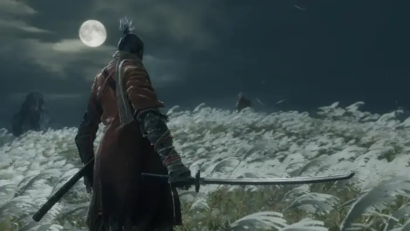
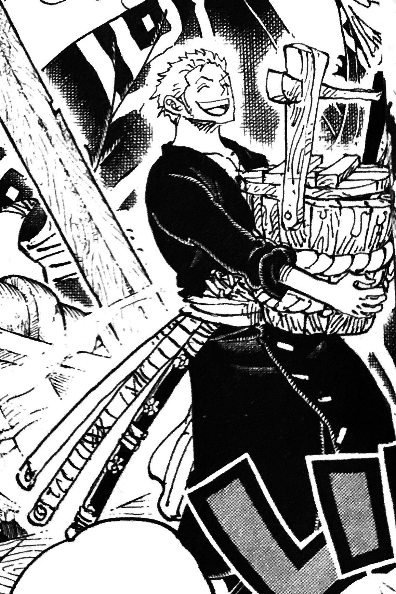
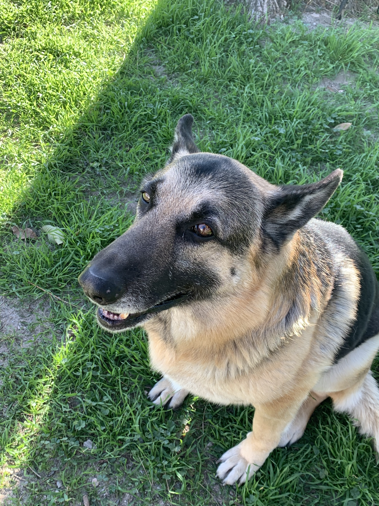

Gaming
I really enjoy fast-paced games, my favorite being Sekiro. It does take me a while to get the hang of them but the game is on another level when the mechanics are mastered.
Reading
Used to be an anime only guy, but I've been more into manga now. Some that I've enjoyed the most so far have to be One Piece and Chainsaw Man. I've got others but I'll keep it brief.
My Dogs
My dogs are the closest things I'll have to kids. I've got 3 German Sheperds and a Pomeranian. The one showing is my best boy Sparky. While he isn't here with me anymore, he will always be best boy.